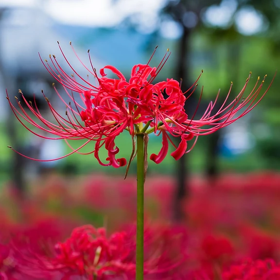

Blue spider lily, jenis bunga yang gigadang-gadangkan memiliki efek anti-sinar matahari bagi para iblis yang bisa mengonsumsinya. Namun, tanaman ini hanya mekar ketika matahari terbit.

Red spider lily, jenis bunga yang sering dikaitkan dengan suatu akhir tragis yang akan menghampiri sesiapapun yang melewati wilayah yang ditumbuhi oleh bunga ini. Walaupun ada beberapa yang "kebal" terhadap hal tersebut.